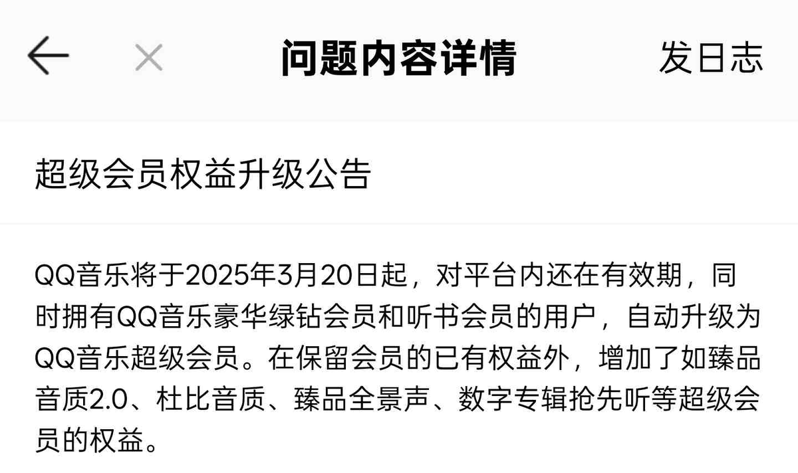

先自行开通QQ音乐会员（自己去找别人给你送3天也可以），然后再打开链接0.1元开通听书会员
链接： https://t.co/9QPEkf7c2P

链接： https://t.co/9QPEkf7c2P

0.1撸到Q音听书会员2099年还是有点厉害的，只要有绿钻和听书会员，系统会自动升级为超级会员！
但有一个前提：就是本身没有超级会员才会自动升级！
这里2元不能升级为超级会员是因为听书会员已经到2099了，不能再续费了！ https://t.co/8ui4HMZJ7B
但有一个前提：就是本身没有超级会员才会自动升级！
这里2元不能升级为超级会员是因为听书会员已经到2099了，不能再续费了！ https://t.co/8ui4HMZJ7B